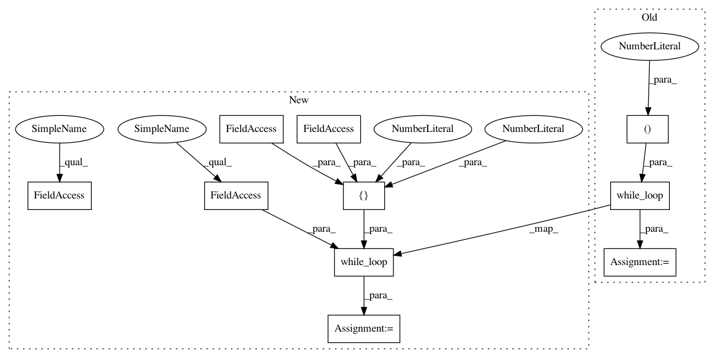

271dddf15a9f07bb9647ecf5594e079e12f2e8d2,examples/securenn/network_b.py,ModelTrainer,build_training_graph,#ModelTrainer#Any#,83
Before Change
with tf.control_dependencies([optimizer.minimize(loss)]):
return i + 1
loop = tf.while_loop(lambda i: i < self.ITERATIONS * self.EPOCHS, loop_body, (0,))
// return model parameters after training
loop = tf.Print(loop, [], message="Training complete")
with tf.control_dependencies([loop]):
After Change
params = [Wconv1, bconv1, Wconv2, bconv2, Wfc1, bfc1, Wfc2, bfc2]
// optimizer and data pipeline
optimizer = tf.train.AdamOptimizer(learning_rate=self.LEARNING_RATE)
// training loop
def loop_body(i: tf.Tensor, max_iter: tf.Tensor, nb_epochs: tf.Tensor, avg_loss: tf.Tensor) -> Tuple[tf.Tensor, tf.Tensor, tf.Tensor, tf.Tensor]:
// get next batch
x, y = training_data.get_next()
// model construction
x = tf.reshape(x, [-1, self.IN_DIM, self.IN_DIM, 1])
layer1 = pooling(tf.nn.relu(conv2d(x, Wconv1, self.STRIDE) + bconv1))
layer2 = pooling(tf.nn.relu(conv2d(layer1, Wconv2, self.STRIDE) + bconv2))
layer2 = tf.reshape(layer2, [-1, self.HIDDEN_FC1])
layer3 = tf.nn.relu(tf.matmul(layer2, Wfc1) + bfc1)
logits = tf.matmul(layer3, Wfc2) + bfc2
loss = tf.reduce_mean(tf.losses.sparse_softmax_cross_entropy(logits=logits, labels=y))
is_end_epoch = tf.equal(i % max_iter, 0)
def true_fn() -> tf.Tensor:
return loss
def false_fn() -> tf.Tensor:
return (tf.cast(i - 1, tf.float32) * avg_loss + loss) / tf.cast(i, tf.float32)
with tf.control_dependencies([optimizer.minimize(loss)]):
return i + 1, max_iter, nb_epochs, tf.cond(is_end_epoch, true_fn, false_fn)
loop, _, _, _ = tf.while_loop(self.cond, loop_body, [0, self.ITERATIONS, self.EPOCHS, 0.])
// return model parameters after training
loop = tf.Print(loop, [], message="Training complete")
with tf.control_dependencies([loop]):
In pattern: SUPERPATTERN
Frequency: 4
Non-data size: 10
Instances
Project Name: mortendahl/tf-encrypted
Commit Name: 271dddf15a9f07bb9647ecf5594e079e12f2e8d2
Time: 2018-10-17
Author: 1278248+morgangiraud@users.noreply.github.com
File Name: examples/securenn/network_b.py
Class Name: ModelTrainer
Method Name: build_training_graph
Project Name: mortendahl/tf-encrypted
Commit Name: 271dddf15a9f07bb9647ecf5594e079e12f2e8d2
Time: 2018-10-17
Author: 1278248+morgangiraud@users.noreply.github.com
File Name: examples/securenn/network_d.py
Class Name: ModelTrainer
Method Name: build_training_graph
Project Name: mortendahl/tf-encrypted
Commit Name: 271dddf15a9f07bb9647ecf5594e079e12f2e8d2
Time: 2018-10-17
Author: 1278248+morgangiraud@users.noreply.github.com
File Name: examples/securenn/network_b.py
Class Name: ModelTrainer
Method Name: build_training_graph
Project Name: mortendahl/tf-encrypted
Commit Name: 271dddf15a9f07bb9647ecf5594e079e12f2e8d2
Time: 2018-10-17
Author: 1278248+morgangiraud@users.noreply.github.com
File Name: examples/securenn/network_c.py
Class Name: ModelTrainer
Method Name: build_training_graph
Project Name: mortendahl/tf-encrypted
Commit Name: 271dddf15a9f07bb9647ecf5594e079e12f2e8d2
Time: 2018-10-17
Author: 1278248+morgangiraud@users.noreply.github.com
File Name: examples/securenn/network_a.py
Class Name: ModelTrainer
Method Name: build_training_graph